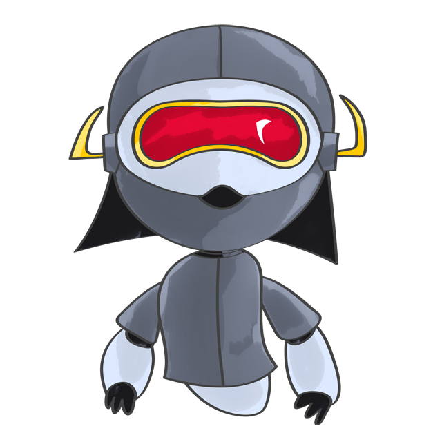

Make a simple dynamic and/or interactive sketch using WebGL, SVG or the HTML5 <canvas> tag and your framework of choice. Add it as a background or as a component to your homepage for extra points.
Monday, March 9th, 9:00am.
Please relpy to Sterling's position. Do you agree? disagree? not sure?
